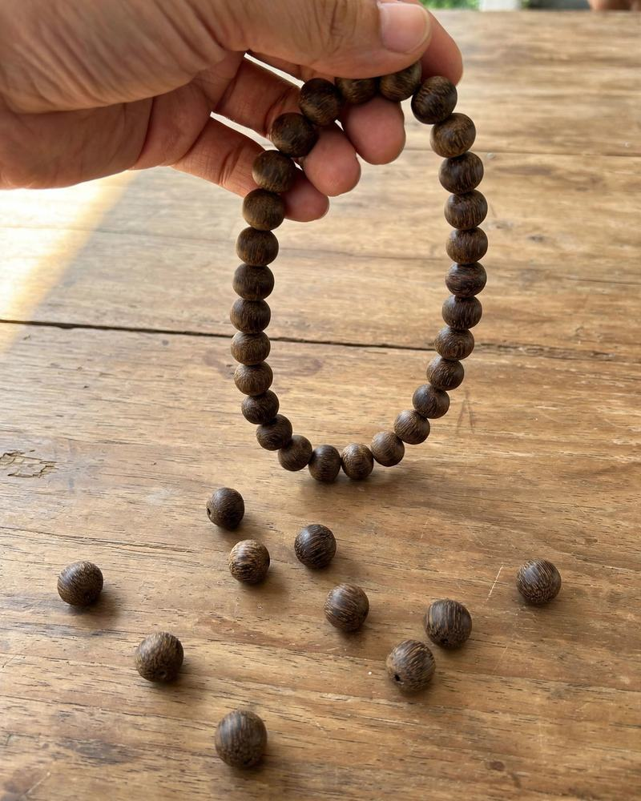

手串的尺寸指珠子的直径，常见的有 8mm、10mm、12mm、14mm。手腕细的人选 8–10mm，手腕粗的人选 12–14mm。尺寸要合手腕，太大太小都不好看。
尺寸也影响价格：同品质下，大尺寸的珠子用的料更多，价格更高。不要为了大尺寸牺牲品质，品质比尺寸重要。
克重是手串重量的参考：同尺寸下，克重越大，油脂越丰富，密度越大。但克重不是唯一标准，香韵和油线也要看。
注意：克重可以造假。注胶、压粉的手串克重虚高，戴着没香味。克重要和香韵、油线、证书一起看，单独看克重没意义。
配珠是手串上搭配的装饰珠：隔珠、顶珠、佛头。配珠的作用是点缀，不要喧宾夺主。配珠的材质要和沉香协调，颜色别太跳。
配珠的品质也要看：劣质配珠会掉色、会磨损沉香珠。买手串的时候问清楚配珠的材质，别为配珠多付钱。
孔道是珠子中间穿绳的孔。好的孔道光滑、居中，没有毛刺和裂纹。孔道粗糙、偏孔、开裂的手串，戴着容易断绳，珠子也容易裂。
检查孔道：把珠子对着光看，孔道里有没有杂质、胶水。注胶的手串孔道里常有胶水残留，闻着有化学味。
一串手串的珠子要大小匀称、颜色接近。珠子大小不一、颜色差异大的，可能是拼凑的料，品质不稳定。
天然沉香的珠子不可能完全一样，轻微的色差是正常的。但色差太大、油线风格完全不同的，就要警惕拼凑。
闻一闻：室温下有没有香味，上炉香韵怎么样。看一看：油线自然吗，孔道光滑吗，珠子匀称吗。问一问：证书、溯源、退换政策。
手串的保养见文章 25。买之前先看真假鉴别（文章 01、06），心里有数再下手。
| 看什么 | 好的表现 | 要警惕 |
|---|---|---|
| 尺寸 | 合手腕，8–14mm 按手腕选 | 为大尺寸牺牲品质 |
| 克重 | 同尺寸下克重越大油脂越丰富 | 注胶压粉虚高克重 |
| 配珠 | 点缀协调，不喧宾夺主 | 劣质配珠掉色、磨损珠子 |
| 孔道 | 光滑居中，无毛刺裂纹 | 粗糙偏孔，孔道里有胶水 |
| 珠子 | 大小匀称，颜色接近 | 大小不一、色差大，拼凑料 |